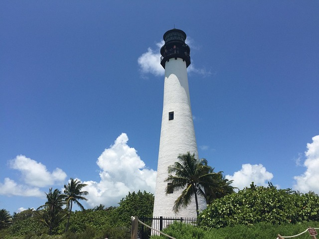
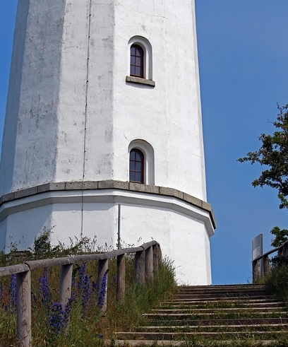
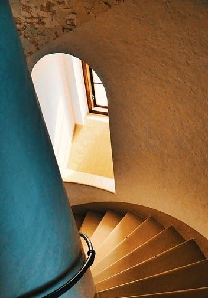

Our Sustainable Lighthouse
A lone lighthouse rises above the palms on Starry Island, its white stone tower catching the sun by day and guiding ships with a soft, steady glow by night. Its beacon is powered entirely by sustainable energy, our signature Super Kelp, which is native to the island's glistening coasts. The result is a light that never falters, even during tropical storms, and a model of how tradition and innovation can coexist in harmony.

An Oceanfront with A View
Climbing to the top rewards visitors with a sweeping view of the lagoon, where a rare species of silver‑striped dolphins often dances just beyond the reef. These dolphins, found only in the waters surrounding Starry Island, are known for their playful spirals and shimmering markings that catch the sunlight like liquid metal. From the lantern room’s balcony, you can watch them glide through the turquoise water, sometimes leaping high enough to cast shadows across the lighthouse walls.

A Historic Landmark with Mysterious Origins
Though the lighthouse feels like a peaceful retreat, it also serves a vital purpose as a coastal station for the local Coast Guard. The upper levels house modern navigation equipment and lookout posts, while the lower base—constructed from massive black stones unlike anything else on the island—holds a mystery of its own. Archaeologists believe this foundation predates the lighthouse by centuries, built by an unknown seafaring culture whose symbols are still faintly etched into the stone. The Coast Guard works above these ancient walls every day, blending the island’s deep past with its ongoing mission to protect the surrounding seas.